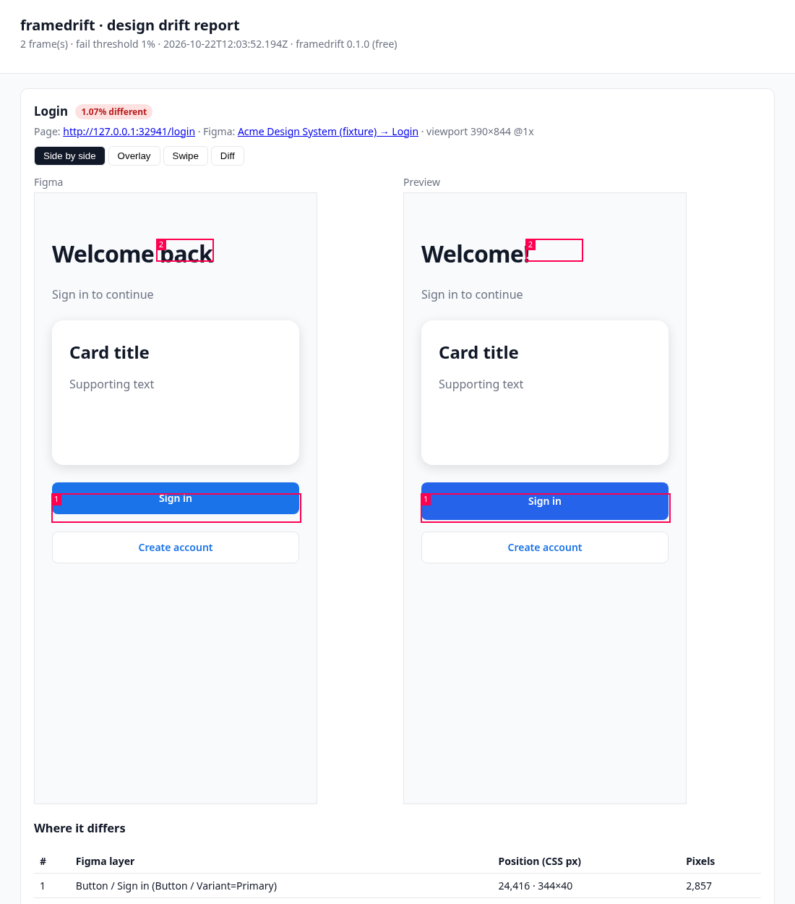

Checks every PR's Vercel preview
against its Figma frame.
framedrift runs in CI when Vercel finishes a preview, diffs the page with the Figma frame it was built from, and posts one PR comment naming the layers that drifted. No extension to remember to open.
Add the GitHub Action Try the CLInpx framedrift demo # try it on a built-in page, no Figma token npx framedrift compare --url https://my-app-git-feat.vercel.app/login \ --figma "https://www.figma.com/design/AbC123/App?node-id=20-1"

From framedrift's end-to-end test fixture, not a customer project.
The problem
Design review happens in screenshots, after merge, if at all. "The button is 8px taller than in Figma" gets found by the designer two sprints later, or by nobody. Visual regression tools compare your app with itself. They can't tell you it never matched the design in the first place.
Why not a browser extension?
Good design-QA tools exist: Pixelay, DualCheck, inspecta and OverlayQA ($8–39/month) all overlay Figma on a live page through a browser extension or Figma plugin. They work when someone opens them. framedrift is for the PRs nobody checks by hand: it runs on every preview deployment, automatically, and puts the result in the pull request where review already happens.
| framedrift | Extension / plugin tools | Chromatic, Percy | |
|---|---|---|---|
| Compares against | the Figma frame | the Figma frame | an earlier screenshot of your app |
| Runs | on every PR, in CI | when someone opens it | on every PR, in CI |
| Results | PR comment + HTML report | browser / Figma / their app | their dashboard |
Based on the tools' own sites, October 2026. If one of them now runs in CI, tell us and we'll fix this table.
How it works
1. Map pages to frames
A.framedrift.json in the repo, or a framedrift: /login <figma link> line in the PR description.2. Vercel deploys a preview
The Action renders each Figma frame and captures the preview at the same size in headless Chromium.3. One PR comment
Mismatch per page, the regions that differ with Figma layer names, and a full report with side-by-side, overlay, swipe and diff views.Pricing
| Free (MIT) | Pro · $12/month per repo | |
|---|---|---|
| CLI compares, exit codes | Unlimited | Unlimited |
| Frames per Action run | Up to 3 | Unlimited |
| PR comment + HTML report | ✓ | ✓ |
| Fail the check to block merge | Report only | ✓ |
framedrift is MIT-licensed. Pro is an honor-system license for teams. The check is in the open-source code. Pay if it saves you review time. Billed through Polar.
Pro checkout opens soonFAQ
Will it ever be 0%? No. Browsers and Figma rasterize text differently. Start with a 2% threshold and tune it on real PRs.
What leaves my CI? Calls to Figma's API, your preview, GitHub's API, and for Pro a license-key check to Polar. There is no framedrift server.
Not on Vercel? Pass preview-url to the Action, or run the CLI anywhere.